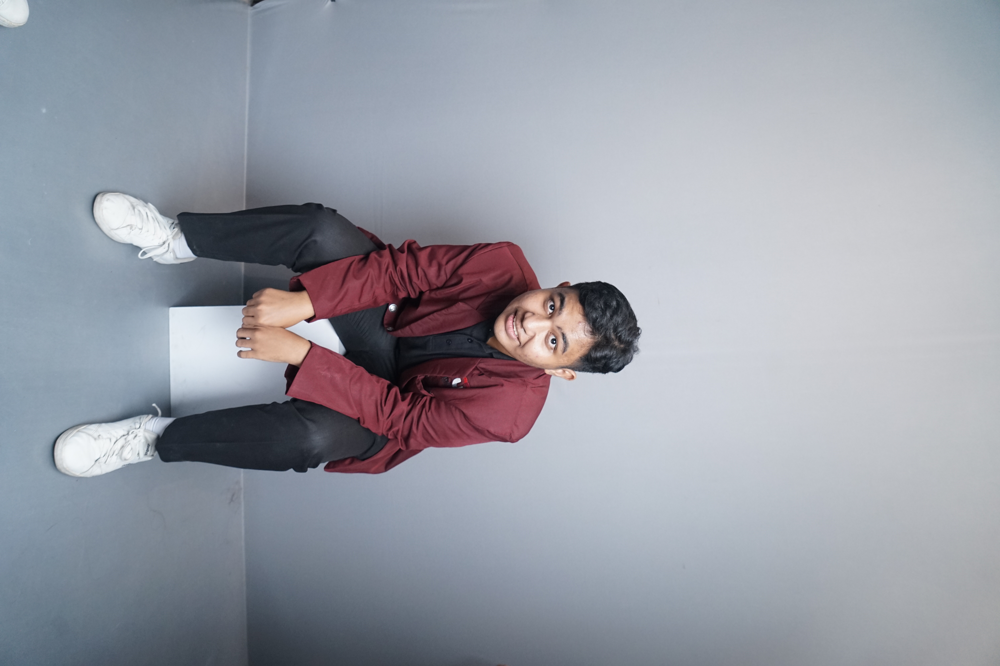

Welcome To My Web

Personalize Theme
*Theme settings will be saved for
your next visit
Biodata Saya
Hello! Perkenalan nama saya Eben Ezer Tarigan dengan nim 607012300076,Saya dari Kelas D3SI702 ingin memenuhi Tubes mata kuliah arsitektur jarigan dan komputer.